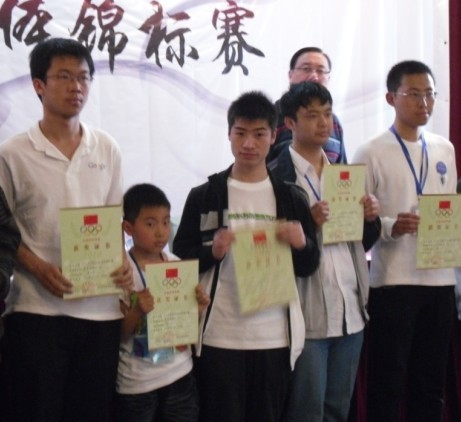
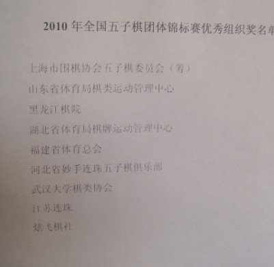

茗弈全团照片
首页
茗弈阁
#1 茗弈全团照片 作者：茗弈小刀 发表时间：2010-5-3 11:16:19


#2 Re:茗弈全团照片 作者：茗弈小刀 发表时间：2010-5-3 11:33:30
一队最后一轮4比0，第七名！真棒小伙子们！
#3 Re:茗弈全团照片 作者：五子痴 发表时间：2010-5-3 11:47:48
 意料之中
意料之中
#4 Re:茗弈全团照片 作者：茗弈小刀 发表时间：2010-5-3 11:49:56
1队还比较稳定，2队极不稳定，2个娃娃又是第一次比，唉。戴宇轩在慢慢成熟了。
#5 Re:茗弈全团照片 作者：阔哥 发表时间：2010-5-3 13:05:11
祝贺小伙子们，虽然没进前五，成绩还可以接受，毕竟小孩多，比赛让他们快快成熟下次拿个好成绩，呵呵，还要感谢他们为茗弈棋社作出的贡献，也感谢小刀师傅为比赛而作出的付出，也感谢茗弈棋群所有群员，希望大家继续团结，为以后的比赛再上一个层次 ［ 茗弈小刀 于 2010-5-3 15:46:43 时花20金币送鲜花一朵］
#6 Re:茗弈全团照片 作者：梦婷 发表时间：2010-5-3 18:00:23
 祝贺！
祝贺！ ［ 茗弈小刀 于 2010-5-3 19:48:47 时花20金币送鲜花一朵］
#7 Re:茗弈全团照片 作者：茗弈小刀 发表时间：2010-5-3 20:03:27
1队水平本身就比较稳，唯一担心的是第一次配合，怕协调不好，另外戴宇轩有点担心他天马行空的乱下，嘿，还算有惊无险吧，这个成绩我还是很满意。2队2个娃娃，哎，实战少了。平时根本不下棋，以后要加强实战练习。
谢谢所有支持这次茗弈比赛的朋友！是你们带给了前方选手厚重的力量和温暖。
#8 Re:茗弈全团照片 作者：茗弈的飞猪 发表时间：2010-5-4 9:45:48
热烈祝贺我们茗弈第一次参赛就取得第七名的好成绩！！！
希望下次勇夺第一！！！
#9 Re:茗弈全团照片 作者：望穿天涯 发表时间：2010-5-4 10:17:15
第一次参加这样的比赛能取得这样的成绩已经很不容易了,大家辛苦了哈,希望通过这次的磨练在下次的比赛中能取得更好的成绩,加油!!!
#10 Re:茗弈全团照片 作者：安娜制作所 发表时间：2010-5-4 10:42:26
开了个好头哈,各项工作安排合理,又出了成绩,大家的努力付出得到了回报,希望大家继续努力,棋社更上一层楼!
#11 Re:茗弈全团照片 作者：虎哥 发表时间：2010-5-4 13:03:50
张真学长果然强悍
［ 茗弈宽容 于 2010-5-5 12:05:01 时花20金币送鲜花一朵］
#12 Re:茗弈全团照片 作者：我就不信注册不上 发表时间：2010-5-4 17:14:26
哈哈，炫飞第一次参赛的时候最好名次也是第七，08年，炫飞一队（吴嫡、黄立勤、李非、贺启发）
#13 Re:茗弈全团照片 作者：举步回眸浅浅笑 发表时间：2010-5-5 12:04:04
祝福我们的茗弈,
#14 Re:茗弈全团照片 作者：衣恋 发表时间：2010-5-7 13:30:33
茗义加油。在接在历取得更好成绩！
［ 茗弈小刀 于 2010-5-7 14:02:55 时奖励此帖[金币加 20 威望加1］
#15 Re:茗弈全团照片 作者：黄药师 发表时间：2010-5-7 14:21:50
再接再厉 举报楼上错别字
#16 Re:茗弈全团照片 作者：你好柏拉图 发表时间：2010-5-7 14:59:28
加油茗弈！ ［ 茗弈小刀 于 2010-5-7 15:02:56 时奖励此帖[金币加 20 威望加1］
#17 Re:Re:茗弈全团照片 作者：海湾浪琴 发表时间：2010-5-7 17:45:45
#18 Re:茗弈全团照片 作者：海湾浪琴 发表时间：2010-5-7 17:46:03
#19 Re:茗弈全团照片 作者：海湾浪琴 发表时间：2010-5-7 17:46:21

#20 Re:茗弈全团照片 作者：海湾浪琴 发表时间：2010-5-7 17:46:38
#21 Re:茗弈全团照片 作者：茗弈宽容 发表时间：2010-5-8 16:29:37

#22 Re:茗弈全团照片 作者：举步回眸浅浅笑 发表时间：2010-5-8 22:30:37